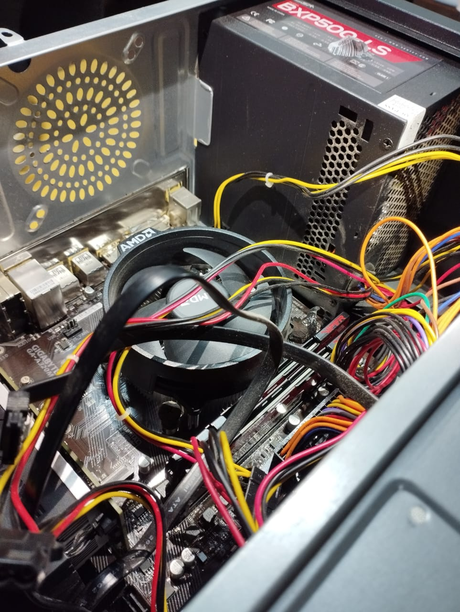
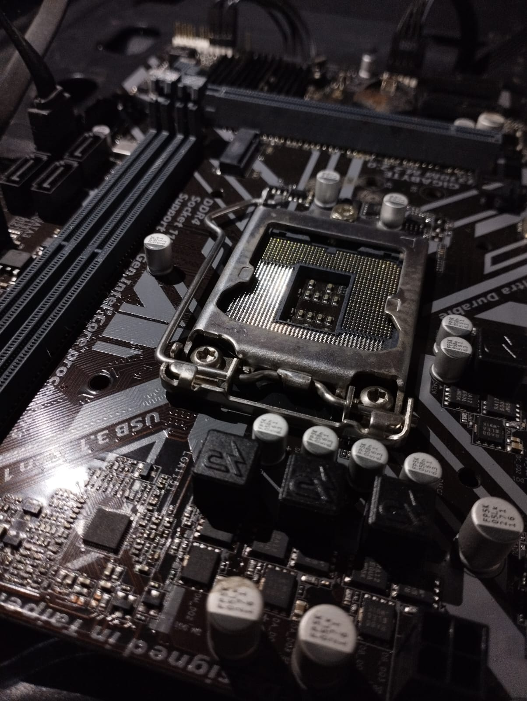
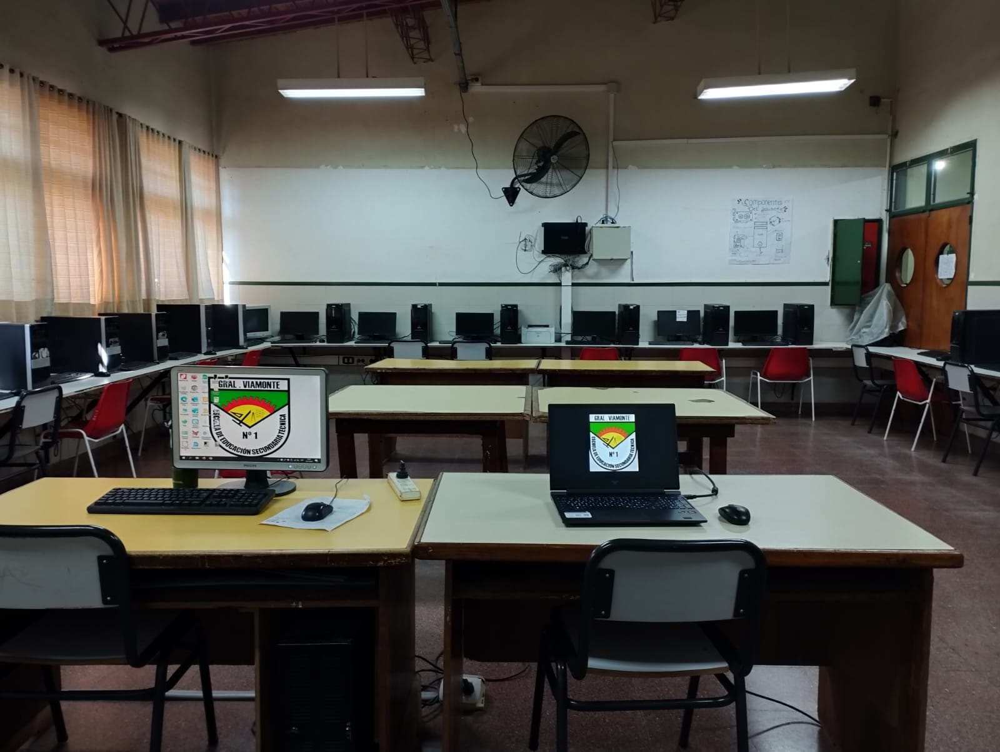
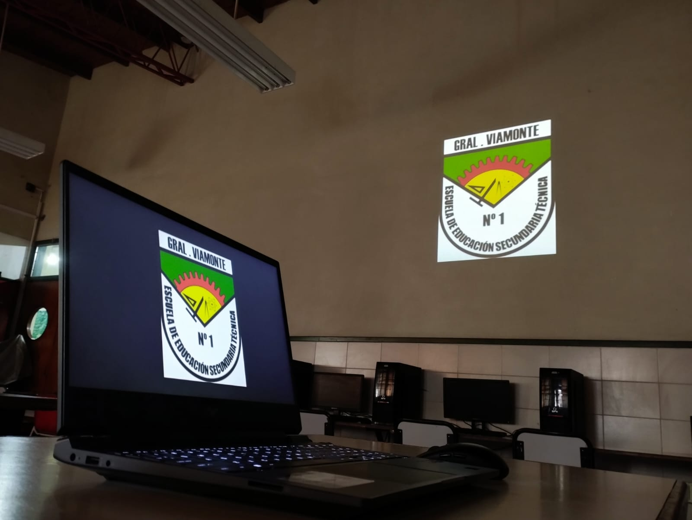
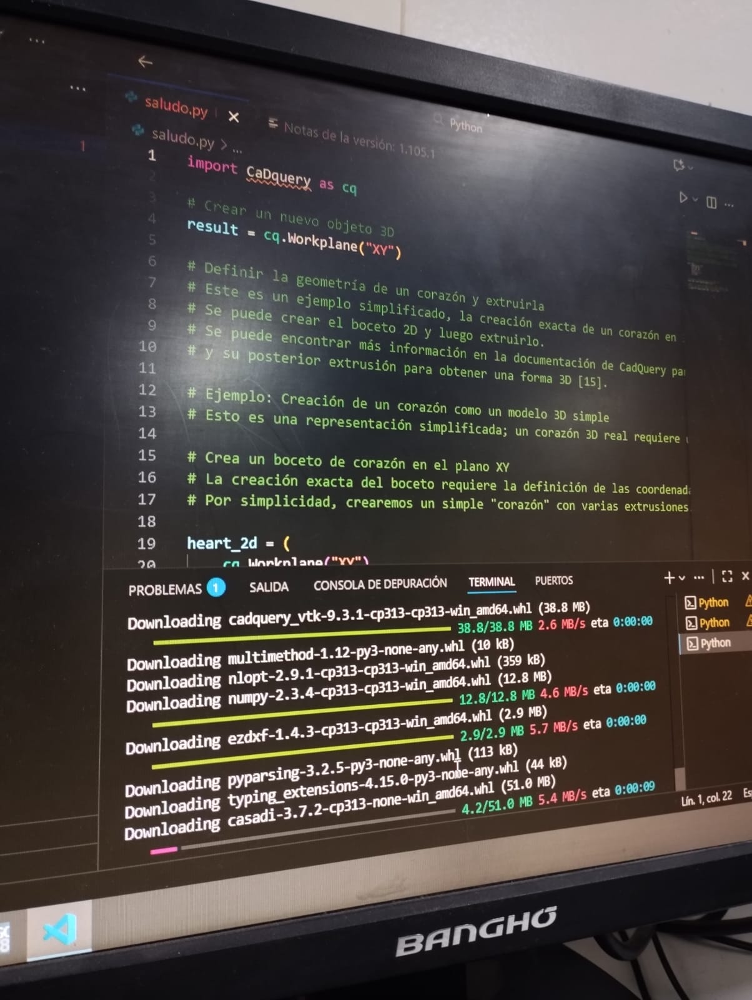

Gestión y Administración:
Capacitación en metodologías de trabajo, gestión de bases de datos, control de versiones y administración de recursos IT, permitiendo planificar y liderar proyectos tecnológicos desde su concepción hasta su entrega. Se hace especial énfasis en el trabajo colaborativo, la organización del tiempo bajo marcos de trabajo ágiles y el control de calidad en cada fase del desarrollo del software.
Practicas
Los Alumnos de 6°año: desarrollaron la página web de la escuela, utilizando los conocimientos adquiridos desde 4° y 5° año, además de realizar la aplicación del pañol, la modalidad de programación es a ciclo cerrado, actualmente



Áreas Clave de Formación
Desarrollo de Software:
Aplicación de lenguajes de programación para la creación de aplicaciones de escritorio, móviles y de sistemas operativos, enfocándose en la resolución de problemas y la automatización de procesos.
Desarrollo y Mantenimiento Web:
Diseño, creación y optimización de páginas y aplicaciones web. Incluye el soporte continuo, actualización y seguridad de los sitios en línea. Los estudiantes dominan la arquitectura cliente-servidor, asegurando que las plataformas no solo sean visualmente atractivas e intuitivas para el usuario, sino también rápidas, seguras y capaces de gestionar bases de datos de forma óptima.
Interacción con Hardware y software :
Comprensión de la arquitectura de computadoras y sistemas digitales. Los estudiantes aprenden cómo el software se comunica con el hardware. Aprendizaje y aplicación de lenguajes de programación para la creación de aplicaciones de escritorio, móviles y de sistemas operativos, enfocándose en la resolución de problemas y la automatización de procesos.

